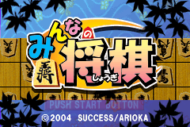

Minna no Soft Series - Minna no Shougi (Japan) (Rev 1)
EEPROM 4K Save Format Spec gbakit Built-In 💾 MultiBoot 🎮 4P Link
Cartridge Identity
- Game Code
BSGJ(FamilyBSG)- Header Title
SYOGI- Maker / Revision
8N/ rev1- ROM Size
- 4.0 MiB (4,194,304 B)
- Save Media
EEPROM 4K- SHA-256
de777bc42749a9b917d68c921f2b6fb20af4a4e9a09219888b331db0e152d324- Engine / SDK Group
comm-057(3 families)
Screenshots

Link Cable & Multiplayer Communications
This title contains detected communication capabilities: 💾 MultiBoot 🎮 4P Link.
Detailed protocol specifications, SIO registers, Joybus commands, and MultiBoot sequences are documented in the Link & Multiplayer Reference.
- Multi-Player SIO (4P)
- 16-bit ring network · SIOCNT (
0x04000128) literals:0x00535c,0x00544c,0x0054b4· SIODATA32/SIOMULTI0 (0x04000120) literals:0x005868,0x005b40,0x005ba4 - Single-Cart MultiBoot
- Single-Cartridge MultiBoot (Download Play) client/server handler · Thumb SWI 0x25 (
0xDF25):0x04867e,0x0c48c0,0x133188,0x15fe2a
Battery Save Format Specification
Open Full Save Format SpecDownload save-format.json
- Specification Coverage
- 3 mapped fields · 0 verified checksum(s) · Confidence: HIGH
- gbakit Built-In Support
- Built-in (BSGJ)
gbakit save verify BSGJ save.sav
gbakit save decode BSGJ save.sav
gbakit save fix BSGJ damaged.sav -o repaired.savObserved Battery Save Layout
- Fill Byte & Active Size
0xFFfill · 36–36 / 512 B active (entropy 0.67 bits/B)- Active Offset Ranges
0x0–0x1F,0x24–0x27(2 total)- ASCII Magic / Headers
- None detected
- Observed Variable Regions
- 0 bytes across 0 spans: None
- Candidate Checksum/Counter Spans
- None
Asset Map (formatkit.asset-map.v1)
Download BSGJ-r1-de777bc42749a9b9.asset-map.json.gz (91,301 B (89.2 KiB)) Verified PASS · 88.35% coverage
| Metric | Bytes / Value | Entries |
|---|---|---|
| Identified | 3,705,748 B (3.53 MiB) (88.35%) | 1,216 |
| Mapped | 0 B (0.00%) | 0 |
| Opaque | 0 B (0.00%) | 0 |
| Unknown | 488,556 B (477.1 KiB) (11.65%) | 915 |
| Total ROM Size | 4,194,304 B (4.00 MiB) | 2,131 |
| Coverage % | 88.35% | — |
| Entries w/ Code Refs | 1,228 / 2,131 (57.63%) | — |
Top Identified Formats: audio.m4a-wavedata (1 · 3,043,896 B (2.90 MiB)) · compress.bios-lz77 (910 · 613,316 B (598.9 KiB)) · gfx.gba-palette (303 · 45,216 B (44.2 KiB)) · audio.m4a-song-table (1 · 3,128 B (3.1 KiB)) · gba.rom-header (1 · 192 B)
Largest unknown Extents (Headerless / Custom Asset Candidates)
| Offset | Size | Shannon Entropy | Code Refs |
|---|---|---|---|
0x000239C0 | 57,156 B (55.8 KiB) | 6.557 bits/B | 0 |
0x00012094 | 48,080 B (47.0 KiB) | 6.525 bits/B | 0 |
0x00044474 | 37,588 B (36.7 KiB) | 6.620 bits/B | 0 |
0x00001A6C | 37,028 B (36.2 KiB) | 6.360 bits/B | 0 |
0x0001DC84 | 23,836 B (23.3 KiB) | 6.503 bits/B | 0 |
gzip -dk BSGJ-r1-de777bc42749a9b9.asset-map.json.gz && gbakit map verify rom.gba BSGJ-r1-de777bc42749a9b9.asset-map.json
gbakit assets export rom.gba --asset-map BSGJ-r1-de777bc42749a9b9.asset-map.json -o out/Text, Fonts & Scene Data
- Primary Text Encoding
- 16-bit / UTF-16LE text (
1ASCII strings) - Font & VWF Indicators
- VWF Width Table 1bpp Font · BIOS SWIs: BitUnPack
0x10:22· LZ770x11/12:48· Huffman0x13:10· RLE0x14/15:42 - Scene & Packaging
15ROM pointer tables (≥32 entries,0≥200) ·19relativeu32TOCs ·75OAM metasprite hits
Hardware MMIO Subsystems
ppu_display0x8000e80,0x8001320,0x800133c,0x8001390,0x80040c4,0x80040ec,0x8004118,0x8004130
Regional Variants & Revisions (Family BSG)
- Minna no Soft Series - Minna no Shougi (Japan) (
BSGJ, 4 MiB)